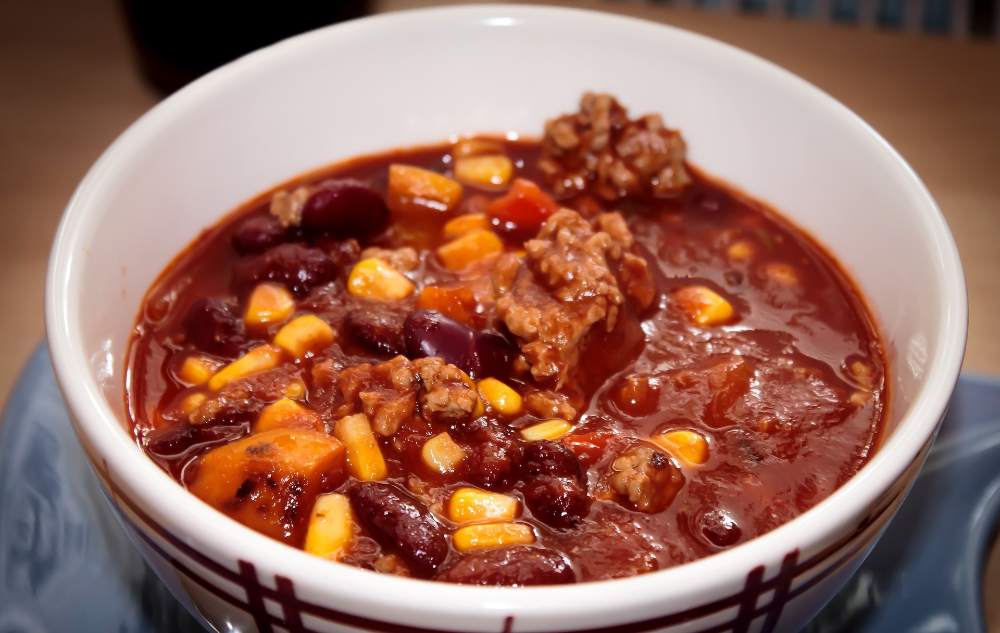

Chili con Carne

2 Std.
simpel
29.12.2022
101 kcal
Zutaten für
| 1 | Zwiebel | |
| 1 | Zehe | Knoblauch |
| 1 | Chilischote | |
| 1 | TL | Chilipulver |
| 350 | g | Rinderhackfleisch |
| 1 | Dose | Tomaten |
| 1 | Dose | Kidneybohnen |
| 1 | TL | Kreuzkümmelpulver |
| Salz & Pfeffer |
Nährwerte für 1 Portion
Protein: 19,2 g
Kohlenhydrate: 27,6 g
Fett: 7,2 g
Zubereitung
ca. 20 Min
Fertig in ca. 2 Std.
Zwiebeln und Knoblauch würfeln und in heißem Öl anschwitzen. Gehackt Chillischoten, Kreuzkümmel und Chilipulver hinzufügen und weitere 2 Minuten dünsten. Das Rinderhack in den Topf geben und bei großer Hitze anbraten. Die Tomaten unterrühren und mit Salz und Pfeffer würzen. Alles auf mittlerer Flamme 90 Minuten köcheln lassen. Guten Appetit!
Rezept erstellt von

Denise